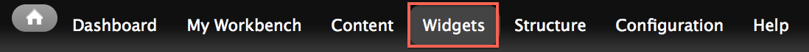
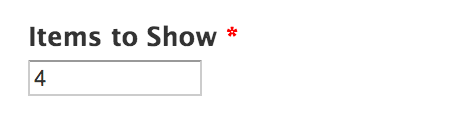
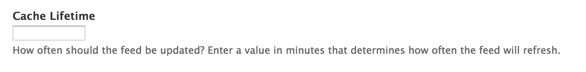

A widget is a block of content that can be placed on any page on the site. When you create a widget, it can be used as a block, meaning that it can be placed in a region of the site and shown using standard visibility settings. It can also be placed in a mini-panel or in panelizer on an individual page.
There are different types of widgets:
In order to add a new widget, you will have to create a new instance of one.
In the Administration Menu, navigate to:
Content > Add Block > [Type of widget]

In the Administration Menu, navigate to:
Widgets

Select the widget you want to update, and click edit under the OPERATIONS column.
Basic Blocks allow content authors to create simple text and HTML markup to be placed within and rendered using a formatting toolbar.
Image Blocks allow content authors to create a block which consists of a single image.
Code Blocks allow content authors to insert javascript or php into the page. This action should only be completed by advanced users.
Link blocks allow content authors to create a block of links. Links are displayed in a simple vertical list.
RSS Feed Widgets allow content authors to create a block of rss items (results). RSS results are displayed in a simple vertical list.
Below is an example of an RSS Feeds Widget that pulls in news items from the primary ISU site.
Feed Link is the main source of the RSS feed. Enter the RSS Feed's url here.

Items to Show determines how many items will be displayed in the block.

Cache Lifetime is a numeric value represented in minutes that determines how often the RSS feed should refresh.

Hide Title toggles whether or not the RSS feed item's title should be displayed in the results.
Created on January 8, 2014
Last modified on January 8, 2014
Authored by Gray Sadler